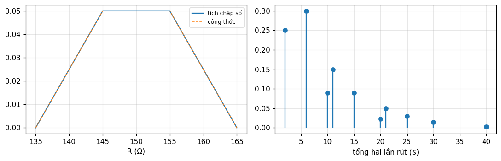
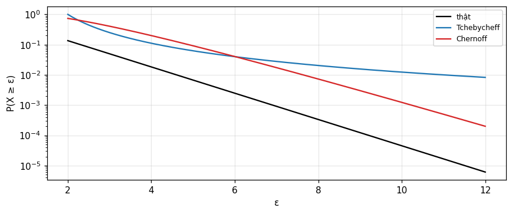
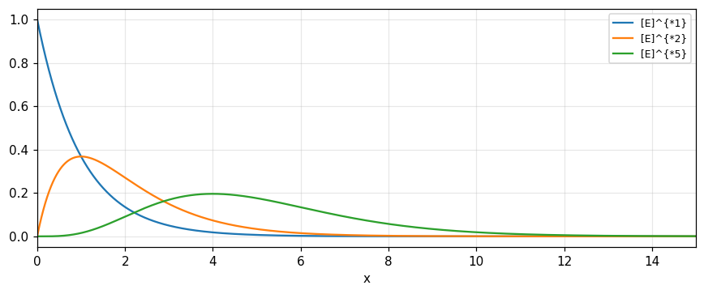

Xác suất, biến ngẫu nhiên và hàm đặc trưng
Từ tập hợp và xác suất, biến ngẫu nhiên và mômen (Barkat) tới phân bố của tổng là tích chập, hàm đặc trưng là biến đổi Fourier của mật độ, phân bố mũ, Poisson và giới hạn trung tâm (Bracewell).
Bài giảng (slide) Thực hành với Jupyter Notebook Quiz tự kiểm tra
Bài giảng (slide)
Xác suất, biến ngẫu nhiên và hàm đặc trưng
- Dùng tập hợp, phép đếm, xác suất có điều kiện và quy tắc Bayes để tính xác suất của biến cố.
- Mô tả biến ngẫu nhiên rời rạc, liên tục, hỗn hợp bằng CDF và PDF (có xung), rồi tính kỳ vọng, phương sai, mômen.
- Thấy rằng mật độ của tổng hai biến độc lập là tích chập, và suy ra trung bình, phương sai cộng; xử lý cả tích, thương, max, min và hàm một biến.
- Dùng hàm đặc trưng (biến đổi Fourier của mật độ) để lấy mômen, cộng các biến độc lập, và giải thích giới hạn trung tâm; dùng Tchebycheff, Chernoff, luật số lớn.
- Nhận ra phân bố mũ cắt cụt, gamma (Pearson III) và Poisson từ tích chập, và làm việc với biến ngẫu nhiên hai chiều, tương quan, độc lập với không tương quan.
Dùng nút, chấm tròn hoặc phím ← → để chuyển slide.
Tập hợp và xác suất
- Tập hợp, biểu đồ Venn và các luật
- Tiên đề xác suất và phép đếm
- Xác suất có điều kiện, độc lập và quy tắc Bayes
Vì sao học xác suất trước khi phát hiện tín hiệu
Sách Barkat được thiết kế cho việc học phát hiện tín hiệu thống kê và ước lượng tham số; những khái niệm ấy đòi hỏi hiểu biết vững về xác suất, biến ngẫu nhiên và quá trình ngẫu nhiên. Chương 1 bắt đầu từ lý thuyết tập hợp vì đó là khái niệm nền của xác suất (Barkat, mục 1.1, tr. 1). Bracewell tới cùng chủ đề từ phía khác: vô số ứng dụng của biến đổi Fourier trong thống kê đều xuất phát từ một quan hệ tích chập (chương 16, tr. 427).
Tập hợp: các định nghĩa
Tập hợp là bộ sưu tập các đối tượng, gọi là phần tử; ký hiệu a\in A. Có thể mô tả bằng liệt kê, bằng lời, hoặc bằng dạng A=\{a\mid a\text{ nguyên},1\le a\le6\}. Tập đếm được nếu các phần tử có thể tương ứng 1-1 với 1,2,3,\ldots. Tập vũ trụ U gồm mọi phần tử đang xét, tập rỗng \emptyset không chứa gì. B\subseteq A nếu mọi phần tử của B thuộc A; hai tập không có phần tử chung là rời nhau hay loại trừ nhau (Barkat, mục 1.2.1, tr. 1 đến 3). Nếu U có n phần tử thì có 2^n tập con: với con xúc xắc, 2^6= 64.
Phép toán và các luật
| Phép toán | Ký hiệu | Ý nghĩa |
|---|---|---|
| Hợp | A\cup B | thuộc A hoặc B hoặc cả hai |
| Giao | A\cap B | thuộc cả A và B |
| Hiệu | A-B | thuộc A không thuộc B |
| Phần bù | \bar A | thuộc U không thuộc A |
| Tích Descartes | A\times B | các cặp có thứ tự (a,b) |
Luật: giao hoán, kết hợp, phân phối; A\cup\bar A=U, A\cap\bar A=\emptyset; và De Morgan \overline{A\cup B}=\bar A\cap\bar B (Barkat, tr. 3 đến 6).
Không gian mẫu và biến cố
Lý thuyết xác suất ra đời làm mô hình cho trò chơi may rủi như gieo xúc xắc, quay roulette, chia bài; sau đó mô hình cho thí nghiệm vật lý. Tập mọi kết cục phân biệt có thể có gọi là không gian mẫu S; biến cố là một kết cục hoặc tổ hợp kết cục, tức một tập con của S (Barkat, mục 1.2.3, tr. 6). Với hai xúc xắc, |S|=36; A=\{tổng bằng 7\} có 6 phần tử, B=\{một chẵn một lẻ\} có 18: P(A) = 0.1667, P(B) = 0.5, P(A\cap B) = 0.1667 (vì A\subset B), P(\bar A) = 0.8333 (tr. 7 đến 8).
Ba định nghĩa xác suất
- Cổ điển: N kết cục loại trừ, đồng khả năng; P(A)=N_A/N.
- Tần suất tương đối: P(A)=\lim_{n\to\infty}n_A/n; không cần đồng khả năng, nhưng thực tế n hữu hạn.
- Chủ quan: mức độ tin vào một kết cục (De Finetti).
Barkat nêu ba định nghĩa (tr. 6 đến 7). Số đo: gieo hai xúc xắc 200 000 lần, tần suất tổng bằng 7 là 0.166, gần 1/6 = 0.1667.
Định nghĩa hình thức và các tính chất
Hàm xác suất P(\cdot) gán cho biến cố A một số thực sao cho: (1) P(A)\ge0; (2) P(S)=1; (3) với các biến cố loại trừ nhau đếm được, P(A_1\cup\cdots\cup A_n)=\sum P(A_i) (tr. 7). Từ đó: 0\le P(A)\le1, P(\emptyset)=0, P(\bar A)=1-P(A) và P(A\cup B)=P(A)+P(B)-P(A\cap B) (tr. 12 đến 13). Kiểm tra bằng đếm: với hai xúc xắc, P(A\cup B) = 0.5 =\tfrac12+\tfrac16-\tfrac16.
Phép đếm: quy tắc nhân, hoán vị, tổ hợp
Nếu việc gồm các bước với n_1,n_2,\ldots,n_k cách, tổng số cách là n_1n_2\cdots n_k: từ có 5 chữ cái có thể lặp là 26^5 = 11881376; không lặp là 26\cdot25\cdot24\cdot23\cdot22 = 7893600 (Barkat, mục 1.2.4, tr. 8). Hoán vị r vật trong n chỗ: {}_nP_r=n!/(n-r)!; tổ hợp (không quan tâm thứ tự): \binom nr=n!/[(n-r)!r!]; hoán vị có vật giống nhau dùng hệ số đa thức n!/(n_1!\cdots n_k!) (tr. 8 đến 9). Số đo: \binom{14}{6} = 3003.
Ví dụ: cây xác suất và lấy mẫu không hoàn lại
Bình A có 5 bóng đỏ 2 trắng, bình B có 3 đỏ 2 trắng; chọn ngẫu nhiên một bình rồi rút hai bóng liên tiếp không hoàn lại. P(2\text{ trắng})=\tfrac12\cdot\tfrac27\cdot\tfrac16+\tfrac12\cdot\tfrac25\cdot\tfrac14 = 0.0738 (Barkat, ví dụ 1.3, tr. 9 đến 10), bằng cả phân số chính xác lẫn mô phỏng. Ví dụ 1.4: bình 5 đỏ, 3 lục, 4 xanh, 2 trắng, rút 6 bóng: xác suất có 2 đỏ, 1 lục, 2 xanh, 1 trắng là \binom52\binom31\binom42\binom21/\binom{14}6 = 0.1199 theo đếm chính xác và mô phỏng. (Bản in của sách ghi 0.080; đếm trực tiếp cho 360/3003, ta dùng giá trị tính được.)
Xác suất có điều kiện và độc lập
P(A\mid B)=P(A\cap B)/P(B); nếu B không ảnh hưởng A thì độc lập: P(A\cap B)=P(A)P(B) (Barkat, tr. 13). Với ba biến cố phải thỏa cả tính độc lập từng cặp và P(A_1\cap A_2\cap A_3)=P(A_1)P(A_2)P(A_3) (tr. 13). Ví dụ 1.7: hộp 7 trắng, 3 đỏ, 6 lục; rút lần lượt đỏ, trắng, lục: có hoàn lại thì các biến cố độc lập, \tfrac3{16}\cdot\tfrac7{16}\cdot\tfrac68 = 0.0308; không hoàn lại thì \tfrac3{16}\cdot\tfrac7{15}\cdot\tfrac6{14} = 0.0375 (tr. 14 đến 15).
Quy tắc Bayes và xác suất toàn phần
Nếu A_1,\ldots,A_n loại trừ nhau và hợp lại là S thì với mọi biến cố A: P(A)=\sum P(A\mid A_i)P(A_i) (xác suất toàn phần) và P(A_k\mid A)=P(A_k)P(A\mid A_k)/P(A) (Bayes) (Barkat, tr. 13 đến 14). Ví dụ 1.6: nguồn phát 0 với xác suất 0.6, 1 với 0.4, kênh làm sai một ký hiệu với xác suất 0.2: P(\text{nhận }0)=0.8\cdot0.6+0.2\cdot0.4 = 0.56; và P(\text{gửi }0\mid\text{nhận }0) = 0.8571 (tr. 14). Ví dụ 1.8 (ba bình, tổng 32 bóng): P(\text{trắng}) = 0.2217 và P(\text{bình B}\mid\text{trắng}) = 0.6015 (tr. 15 đến 17).
Bác bỏ ngộ nhận: độc lập khác loại trừ nhau
Hai biến cố có xác suất dương và loại trừ nhau thì không độc lập, vì P(A\cap B)=0\ne P(A)P(B). Số đo: A=\{tổng 7\} và B=\{xúc xắc thứ nhất là 1\} là hai biến cố có giao khác rỗng và P(A\cap B) = 0.0278 bằng P(A)P(B) = 0.0278: độc lập dù không loại trừ nhau; còn C=\{tổng 2\} và D=\{tổng 12\} loại trừ nhau, P(C\cap D) = 0 nhưng P(C)P(D) = 0.00077: không độc lập.
Tự kiểm tra phần 1
- Vì sao P(A\cap B)=P(A)P(B) chỉ khi độc lập?
- Bao nhiêu tập con của tập có 6 phần tử?
- Vì sao rút không hoàn lại làm mất tính độc lập?
Gợi ý: nó là định nghĩa của độc lập; 64; không gian mẫu đổi sau mỗi lần rút.
Biến ngẫu nhiên và mômen
- Biến rời rạc, liên tục, hỗn hợp
- Kỳ vọng, phương sai, mômen
- Tần số phân bố và ký hiệu P(x)\,dx
Biến ngẫu nhiên: một hàm
Biến ngẫu nhiên là hàm thực ánh xạ các phần tử của không gian mẫu S lên các điểm trên trục thực. Nó chẳng ngẫu nhiên cũng chẳng phải biến, mà là một hàm, nên tên hơi dễ gây hiểu lầm. Ký hiệu X,Y,Z cho biến, x,y,z cho giá trị cụ thể (Barkat, mục 1.3, tr. 17). Bracewell dùng thuật ngữ tần suất phân bố: xác suất để đại lượng nhận giá trị giữa x và x+dx là P(x)\,dx, không thứ nguyên; nếu dx có thứ nguyên thì P(x) có thứ nguyên nghịch đảo (chương 16, tr. 427).
Hàm bậc thang và xung: công cụ chung
Bậc thang đơn vị u(x) bằng 1 khi x\ge0 và 0 khi x<0. Xung đơn vị \delta(x) là giới hạn của xung chữ nhật diện tích 1 khi độ rộng tiến về 0; tích phân của xung là bậc thang, đạo hàm của bậc thang là xung, và \int A\delta(x-x_0)f(x)dx=Af(x_0) (Barkat, mục 1.3.1, tr. 17 đến 18). Đó chính là tính chất sàng lọc trong Bracewell (module 5). Với kỳ vọng ta sẽ dùng \delta để viết mật độ của biến rời rạc.
Biến rời rạc: xác suất và CDF
Biến rời rạc chỉ nhận một tập hữu hạn hoặc đếm được các giá trị x_i với P(x_i)\ge0 và \sum P(x_i)=1. Hàm phân bố tích lũy F_X(x)=P(X\le x), và mật độ là f_X(x)=\sum P(x_i)\delta(x-x_i) (Barkat, mục 1.3.2, tr. 18 đến 19). Ví dụ 1.9: X là tổng hai xúc xắc: P(4\le X\le6) = 0.3333 và P(X\ge5) = 0.8333 (tr. 19 đến 20). Mật độ là \frac1{36}[\delta(x-2)+2\delta(x-3)+\cdots+\delta(x-12)]: đó là tích chập của hai mật độ đồng đều, điều sẽ trở lại ở phần 3.
Biến liên tục: mật độ
Biến liên tục có F_X(x)=\int_{-\infty}^xf_X(u)du với f_X\ge0 và \int f_X=1; ngược lại f_X=dF_X/dx (Barkat, mục 1.3.3, tr. 20 đến 22). Ví dụ 1.10: f_X=cx trên 0<x<3: c=2/9 = 0.2222; P(1<X<2) = 0.3333; và F_X(x)=x^2/9 trên [0,3], tại x=2 bằng 0.4444. Mỗi số tính bằng tích phân số và bằng công thức.
Biến hỗn hợp: bộ chỉnh lưu nửa sóng
Biến hỗn hợp có mật độ vừa chứa xung (xác suất tại các điểm rời rạc) vừa có phần liên tục. Ví dụ: đầu vào X có mật độ đối xứng qua bộ chỉnh lưu nửa sóng lý tưởng Y=X khi X>0, Y=0 khi X\le0: P(Y=0)=\tfrac12 (xung cường độ \tfrac12 tại 0) và phần liên tục với diện tích \tfrac12 bằng mật độ của X khi y>0 (Barkat, mục 1.3.4, tr. 22 đến 23). Số đo với X chuẩn: P(Y=0) = 0.5, E[Y] = 0.3989 và \text{var}\,Y = 0.3408, theo tích phân và theo mô phỏng.
Kỳ vọng
Kỳ vọng (giá trị trung bình) của biến rời rạc là E[X]=\sum xP(x); của biến liên tục E[X]=\int xf_X(x)dx. Với hàm g(X): E[g(X)]=\int g(x)f_X(x)dx (định lý quan trọng dùng suốt sách), và E[cX]=cE[X] (Barkat, mục 1.4.1, tr. 23 đến 25). Ví dụ 1.11: một con xúc xắc: E[X] = 3.5. Ví dụ 1.12: mật độ chẵn (bằng 1/4 trên |x|<1 và 1/8 trên 1<|x|<3): E[X] = 0.
Mômen, bình phương trung bình và phương sai
E[X^n] là mômen bậc n quanh gốc; E[X^2] là giá trị bình phương trung bình. Phương sai \sigma_x^2=E[(X-E[X])^2]=E[X^2]-(E[X])^2 và \sigma_x là độ lệch chuẩn (Barkat, tr. 25 đến 26). Ví dụ 1.13: với mật độ của ví dụ 1.12, E[X^2]=\sigma_x^2 = 2.3333 =7/3. Đây đúng là các đại lượng mà Bracewell gọi là mômen, tâm khối và phương sai của một hàm (module 8): mật độ xác suất chỉ là một hàm có diện tích 1. Số đo: hai xúc xắc có E = 7 và phương sai 5.8333 =35/6.
Tự kiểm tra phần 2
- Mật độ của biến rời rạc viết thế nào bằng xung?
- Biến hỗn hợp khác biến liên tục ở điểm nào trên mật độ?
- \text{var}\,X bằng gì theo E[X^2] và E[X]?
Gợi ý: \sum P(x_i)\delta(x-x_i); có xung; E[X^2]-(E[X])^2.
Phân bố của tổng, tích, max, min: tích chập
- Điện trở nối tiếp và chai tiền
- Hệ quả: trung bình và phương sai cộng
- Tích, thương, max, min và hàm một biến
Bài toán điện trở
Mua nhiều điện trở 100 ôm với dung sai 10 phần trăm thì giá trị dao động từ 90 đến 110, gần như đều: mật độ P_1(R)=\frac1{20}\Pi\!\left(\frac{R-100}{20}\right). Tương tự điện trở 50 ôm: P_2(R)=\frac1{10}\Pi\!\left(\frac{R-50}{10}\right). Cần biết dung sai của tổ hợp nối tiếp, tức phân bố P(R) giữa 135 và 165 ôm (Bracewell, tr. 429 đến 430).
Lập luận dẫn tới tích chập
Gọi điện trở chọn từ kho 100 ôm là R'; muốn tổng bằng R thì điện trở từ kho 50 ôm phải là R-R'. Tần suất tổng R là tích tần suất của R' ở thành phần thứ nhất và R-R' ở thành phần thứ hai, lấy tích phân trên mọi khả năng của R': P(R)=\int P_1(R')P_2(R-R')dR', tức P=P_1*P_2 (Bracewell, tr. 430). Ta có thể để cận vô hạn vì P_1 bằng 0 ngoài [90,110]. Đây là quan hệ tích chập cơ bản giữa phân bố của tổng và phân bố các thành phần.
Kết quả: hình thang
Tích chập cho phân bố hình thang (hình 16.1) từ 135 đến 165 ôm, với đỉnh phẳng có độ cao 0.05 trong khoảng 145 đến 155, giống hệt việc quét một dải rộng 20 đơn vị bằng khe rộng 10 đơn vị (cả ba pha kéo dài 10 đơn vị), hay xung chữ nhật 20 vào bộ lọc có đáp ứng xung chữ nhật 10 (tr. 430). Số đo: tại R=140, mật độ 0.025; giá trị trung bình 150 ôm. Cả tích chập số trên lưới và công thức từng khúc cho cùng kết quả.

Kiểm tra bằng các định lý tích chập
Trọng tâm cộng nhau: trung bình của tổ hợp bằng tổng các trung bình. Diện tích nhân nhau: hai phân bố diện tích 1 cho diện tích 1. Phương sai cộng nhau: \sigma^2=20^2/12+10^2/12 = 41.667, độ lệch chuẩn 6.455 ôm, tức 4.3 phần trăm của 150 so với 5.77 phần trăm của mỗi thành phần. Dung sai (theo độ lệch chuẩn) được cải thiện, nhưng khoảng giữa hai cực trị vẫn là 10 phần trăm (tr. 430 đến 431). Nếu có thêm nhiều phần tử nối tiếp hay phân bố tròn hơn, dạng Gauss theo giới hạn trung tâm tiến gần hơn.
Ví dụ thứ hai: chai tiền
Một chai đầy tiền, một nửa là tờ 1 đô, còn lại là tờ 5, 10 và vài tờ 20. Xác suất xuất hiện tờ n đô tỉ lệ với dãy \{10,6,3,1\} tại \{1,5,10,20\} (tổng 20), tức P_1(x)=\tfrac{10}{20}\delta(x-1)+\tfrac6{20}\delta(x-5)+\tfrac3{20}\delta(x-10)+\tfrac1{20}\delta(x-20). Rút hai tờ và cộng: phân bố của tổng là tích chuỗi (tích chập rời rạc) của dãy với chính nó, \{p\}=\{p_1\}*\{p_2\} (Bracewell, tr. 431 đến 433). Kết quả: \tfrac1{400}[100\delta(x-2)+120\delta(x-6)+36\delta(x-10)+60\delta(x-11)+36\delta(x-15)+9\delta(x-20)+20\delta(x-21)+12\delta(x-25)+6\delta(x-30)+\delta(x-40)].
Số đo cho chai tiền
Tổng hai lần rút bằng 6 đô có xác suất 120/400 = 0.3; bằng 11 đô có xác suất 0.15; tổng các xác suất bằng 1 (kiểm tra số học của sách). Trung bình một lần rút 4.5, hai lần 9; phương sai một lần 22.75, hai lần 45.5: đúng cộng nhau. Kiểm cả bằng liệt kê 16 cặp có thứ tự và bằng tích chập chính xác dạng phân số.
Cảnh báo: có độc lập không?
Quan hệ tích chập giả định hai đại lượng không ảnh hưởng nhau. Nếu chai được đổ đầy bằng cách ném từng nắm mỗi loại tiền và không khuấy kỹ thì kết quả có thể khác; hoặc nếu chỉ có một tờ 20 đô trong chai thì rút được nó sẽ ảnh hưởng mạnh lần rút sau. Trước khi áp dụng tích chập phải luôn xét xem hai lần rút có độc lập hay không, tức quy tắc tích có áp dụng được không (Bracewell, tr. 433). Số đo: chỉ có một tờ 20 trong chai 20 tờ (ví dụ), thì P(tổng 40) khi rút hai không hoàn lại là 0, không phải 1/400.
Hệ quả: trung bình và phương sai cộng nhau
Hoành độ trọng tâm cộng nhau dưới tích chập, vậy m=m_1+m_2: trung bình của tổng hai biến ngẫu nhiên là tổng hai trung bình. Phương sai cũng cộng: \sigma^2=\sigma_1^2+\sigma_2^2 (Bracewell, tr. 434). Với ba đại lượng P=P_1*P_2*P_3 nhờ tính kết hợp, và mở rộng cho mọi số đại lượng. Barkat viết các kết quả cùng nghĩa cho biến ngẫu nhiên: E[X+Y]=E[X]+E[Y] (luôn đúng), \text{var}[X+Y]=\text{var}X+\text{var}Y (khi không tương quan) (mục 1.5.2, tr. 41 đến 43).
Tổng đồng đều: hình thang tổng quát
Barkat, ví dụ 1.20: X đều trên [0,a], Y đều trên [0,b], a<b; mật độ của Z=X+Y là tích chập, tính bằng đồ thị: z/(ab) khi 0\le z<a; 1/b khi a\le z<b; (a+b-z)/(ab) khi b\le z<a+b (mục 1.6.2, tr. 52 đến 54). Với a=1, b=2: f_Z(0.5) = 0.25; f_Z(1.5) = 0.5 (đỉnh phẳng); f_Z(2.5) = 0.25. Đó chính là hình thang của Bracewell, cả hai cách viết đều là một phép tích chập.
Tích, thương, cực đại, cực tiểu
Với X,Y độc lập: U=XY có f_U(u)=\int\frac1{|x|}f_X(x)f_Y(u/x)dx; V=X/Y có f_V(v)=\int|y|f_X(vy)f_Y(y)dy; M=\max(X,Y) có F_M=F_XF_Y nên f_M=F_Xf_Y+f_XF_Y; N=\min(X,Y) có f_N=f_X(1-F_Y)+f_Y(1-F_X) (Barkat, tr. 55 đến 58). Với X,Y đồng đều (0,1): f_U(u)=-\ln u, f_U(0.2) = 1.6094, E[U] = 0.25; E[M] = 0.6667 và E[N] = 0.3333, mỗi số theo tích phân và mô phỏng.
Hàm một biến: định lý cơ bản
Nếu Y=g(X) đơn điệu khả vi thì f_Y(y)=f_X[g^{-1}(y)]\,|d g^{-1}/dy|; nếu có nhiều nghiệm x_i thì f_Y(y)=\sum f_X(x_i)/|g'(x_i)|; và cho Y=aX+b, f_Y=\frac1{|a|}f_X\!\left(\frac{y-b}a\right) (Barkat, mục 1.6.1, tr. 49 đến 51). Ví dụ 1.19: Y=aX^2 có hai nghiệm \pm\sqrt{y/a}: f_Y=\frac1{2\sqrt{ay}}[f_X(\sqrt{y/a})+f_X(-\sqrt{y/a})]. Số đo với X chuẩn, a=2: E[Y] = 2, và P(Y\le1) = 0.5205 từ mật độ của Y và từ hàm sai số.
Tự kiểm tra phần 3
- Vì sao phân bố của tổng hai biến độc lập là tích chập?
- Trung bình và phương sai của tổ hợp nối tiếp 100\Omega+50\Omega?
- Khi nào không được áp dụng tích chập cho hai lần rút?
Gợi ý: tích tần suất P_1(x')P_2(x-x') tích phân theo x'; 150 và 41.67; khi các lần rút phụ thuộc nhau.
Hàm đặc trưng, giới hạn trung tâm và các cận
- Định nghĩa và tính chất
- Lấy mômen, tổng độc lập, giới hạn trung tâm
- Tchebycheff, Chernoff, luật số lớn
Định nghĩa hàm đặc trưng
Bracewell: hàm đặc trưng gắn với phân bố tần suất P(x) là \phi(t)=\int P(x)e^{ixt}dx, tức biến đổi Fourier dấu cộng của phân bố (chương 16, tr. 435). Barkat: \Phi_x(\omega)=E[e^{j\omega X}]=\int f_X(x)e^{j\omega x}dx, biến đổi Fourier của mật độ, và nghịch đảo f_X(x)=\frac1{2\pi}\int e^{-j\omega x}\Phi_x(\omega)d\omega (mục 1.4.2, tr. 27 đến 28) [dấu của số mũ trong bản in nghịch đảo phụ thuộc quy ước]. Hai định nghĩa là một; liên hệ với biến đổi Fourier quen thuộc của Bracewell: \phi(t)=F(-t/2\pi) với F(s)=\int P(x)e^{-i2\pi xs}dx.
Ví dụ: phân bố Laplace
Với P(x)=\tfrac12e^{-|x|}: \phi(t)=\dfrac1{1+t^2}. Số đo tại t=0.5: tích phân số 0.8, đúng 1/(1+0.25); theo liên hệ Bracewell tại t=0.7: F(-0.7/2\pi) = 0.6711 bằng \phi(0.7) = 1/(1+0.49). (Ví dụ 1.14 của Barkat, theo lớp chữ của bản PDF, dùng e^{-|x|/2} với kết quả 4/(1+4\omega^2); mật độ này có tích phân 4 chứ không phải 1, nên ở đây ta dùng \tfrac12e^{-|x|} đã chuẩn hóa.)
Tính chất của hàm đặc trưng
- \phi(0)=1, vì \int P(x)dx=1.
- \phi(-t)=\phi^*(t) (Hermite) vì P thực: phần thực chẵn, phần ảo lẻ.
- |\phi(t)|\le1.
- Nếu P(x)=0 với x<0 thì phần thực và phần ảo của \phi là một cặp Hilbert; nếu P bằng 0 trên nửa đường thẳng khác thì dùng định lý dịch (Bracewell, tr. 435).
Số đo với phân bố mũ P=e^{-x}H(x), \phi=1/(1-it): \phi(0) = 1, \max|\phi| trên lưới = 1, và lệch Hermite 7e-15. Barkat thêm: hàm đặc trưng luôn tồn tại còn hàm sinh mômen thì không chắc (tr. 28).
Hàm sinh mômen và lấy mômen
Hàm sinh mômen M_x(t)=E[e^{tX}] khai triển chuỗi McLaurin cho M_x(t)=1+tE[X]+\frac{t^2}{2!}E[X^2]+\cdots, nên M_x^{(n)}(0)=E[X^n]. Đặt t=j\omega được hàm đặc trưng, với E[X^n]=(-j)^n\,d^n\Phi/d\omega^n|_{\omega=0} (Barkat, tr. 26 đến 28). Bracewell (module 8) đã có cùng kết quả: mômen bậc n bằng (-2\pi i)^{-n}F^{(n)}(0). Số đo với Laplace: E[X^2] = 2 và E[X^4] = 24, cả từ tích phân trực tiếp lẫn từ đạo hàm của \phi=1/(1+t^2) (tích phân đường quanh 0).
Tổng độc lập: nhân các hàm đặc trưng
Biến đổi P=P_1*P_2 ta có \phi(t)=\phi_1(t)\phi_2(t): nhân đơn giản các hàm đặc trưng cho hàm đặc trưng của phân bố tổng (Bracewell, tr. 435; Barkat, phương trình 1.135, tr. 45). Đó chính là định lý tích chập. Số đo: tổng hai biến Laplace độc lập có hàm đặc trưng 1/(1+t^2)^2; mật độ tại 0 là \frac1{2\pi}\int(1+t^2)^{-2}dt = 0.25 và bằng \int P(u)P(-u)du từ tích chập trực tiếp.
Giới hạn trung tâm nhìn qua hàm đặc trưng
Nếu nhiều đại lượng ngẫu nhiên được cộng thì phân bố của tổng tiến tới Gauss, với trung bình bằng tổng các trung bình và phương sai bằng tổng các phương sai; khi đủ nhiều thành phần, hai tham số ấy đủ xác định Gauss (Bracewell, tr. 434 đến 435). Nhìn qua \phi^n: gần t=0, \phi\approx1-\sigma^2t^2/2 nên \phi^n\approx e^{-n\sigma^2t^2/2}, là Gauss, đúng như module 8. Số đo: tổng 12 biến đồng đều trên (-\tfrac12,\tfrac12) (phương sai 1) có mật độ tại 0 bằng 0.3939 tính từ tích chập 12 lần và từ \frac1{2\pi}\int\phi^{12}, so với Gauss chuẩn 0.3989.
Tchebycheff
Khi phân bố chưa biết đầy đủ nhưng biết trung bình m_x và phương sai \sigma_x^2, ta cần cận trên cho xác suất. Tchebycheff: P(|X-m_x|\ge\varepsilon)\le\sigma_x^2/\varepsilon^2; với \varepsilon=k\sigma_x thì \le1/k^2 (Barkat, mục 1.4.3, tr. 29). Với phân bố mũ đơn vị (m=1, \sigma^2=1): P(|X-1|\ge2)=P(X\ge3) = 0.0498 và cận Tchebycheff 0.25; P(|X-1|\ge9) = 4.5e-05 với cận 0.0123.
Chernoff
Chernoff chỉ dùng một phía. Với Y=1 khi X\ge\varepsilon và mọi t>0: Ye^{t\varepsilon}\le e^{tX}, nên P(X\ge\varepsilon)\le e^{-t\varepsilon}E[e^{tX}] (Barkat, tr. 29 đến 30). Cần biết thêm về phân bố để tính E[e^{tX}], và chọn t để cận nhỏ nhất. Với phân bố mũ đơn vị E[e^{tX}]=1/(1-t), t=1-1/\varepsilon tối ưu: cận cho P(X\ge3) là 0.406 (lỏng hơn Tchebycheff 0.25 vì Tchebycheff hai phía cho cận \tfrac14 nhưng đại lượng này chỉ nằm một phía), và cho P(X\ge10) là 0.0012 (chặt hơn nhiều so với 0.0123, và gần giá trị thật 4.5e-05). Chernoff không phải lúc nào cũng chặt hơn; nó thắng khi đuôi xa.

Luật số lớn
Cho X_1,\ldots,X_n độc lập cùng trung bình m_x, phương sai \sigma_x^2; S_n=\sum X_i. Luật yếu: \lim_{n\to\infty}P(|S_n/n-m_x|\ge\varepsilon)=0, chứng minh bằng Tchebycheff với \text{var}(S_n/n)=\sigma_x^2/n; luật mạnh: xác suất \lim S_n/n=m_x bằng 1 (Barkat, tr. 30 đến 31). Số đo: 1000 phép thử Bernoulli, p=0.3, \varepsilon=0.05: xác suất chính xác P(|S_n/n-0.3|\ge0.05) = 0.0006 còn cận Tchebycheff pq/(n\varepsilon^2) = 0.084: đúng nhưng rất lỏng.
Nghịch lý điện trở chính xác
Bài tập 3 của Bracewell: để làm điện trở chuẩn 1 megôm, lấy 10 000 điện trở 100 ôm sai số 1 phần trăm nối tiếp. Lập luận: trung bình nR, phương sai n\sigma^2, độ lệch chuẩn \sqrt n\sigma, nên độ lệch tương đối \sigma/(R\sqrt n)\sim10^{-4}. Sai lầm nằm ở giả định độc lập: điện trở cùng lô có sai lệch chung (cùng nhiệt độ, cùng lô sản xuất, cùng hệ số nhiệt). Số đo với sai số đồng đều \pm1 phần trăm độc lập: độ lệch tương đối 5.8e-05; nếu thêm độ lệch chung của lô đều \pm0.5 phần trăm thì 2.9e-03, không cải thiện được ngoài mức ấy (tr. 443). Đây là minh họa của chúng tôi cho một cách giải thích khả dĩ.
Tự kiểm tra phần 4
- Hàm đặc trưng của tổng hai biến độc lập là gì?
- Làm sao lấy E[X^2] từ \phi(t)?
- Tchebycheff cần biết gì về phân bố?
Gợi ý: tích \phi_1\phi_2; -\phi''(0); chỉ cần trung bình và phương sai.
Phân bố mũ, gamma, Poisson và biến ngẫu nhiên hai chiều
- Phân bố mũ cắt cụt
- Gamma, Poisson và tiến về Gauss
- Hai chiều: đồng thời, biên, điều kiện, tương quan
Biến cố ngẫu nhiên hoàn toàn
Ví dụ tốt nhất về biến cố hoàn toàn ngẫu nhiên là sự phân rã phóng xạ tự phát của hạt nhân; cuộc gọi điện thoại và sự bức xạ electron từ catốt cũng có thể trong điều kiện nhất định. Quan sát cho thấy nguyên tử không bền phân rã ở mọi thời điểm có khả năng như nhau, nên số phân rã mỗi giây tỉ lệ với số nguyên tử chưa phân rã. Khoảng cách giữa hai biến cố kề nhau ngắn hơn trung bình thì thường hơn: khoảng càng ngắn càng thường, tới tận khoảng 0, liên quan tới câu ngạn ngữ "tai họa đến từng cặp" (Bracewell, tr. 436).
Phân bố mũ cắt cụt: suy ra
Khoảng trung bình giữa các biến cố là X nên tốc độ trung bình là X^{-1} trên đơn vị. Xác suất xảy ra trong khoảng ngắn \Delta x là X^{-1}\Delta x; không xảy ra là 1-X^{-1}\Delta x. Sau một biến cố, tần suất để N=x/\Delta x khoảng liên tiếp không có biến cố rồi khoảng kế có biến cố là P(x)\Delta x=(1-X^{-1}\Delta x)^NX^{-1}\Delta x; khi \Delta x\to0, P(x)=X^{-1}e^{-x/X}H(x) (Bracewell, tr. 437). Với X=2, x=3, N=10^7: biểu thức giới hạn cho 0.1116, đúng e^{-1.5}/2.
Thử số: trung bình và phương sai
Trung bình m=X và phương sai \sigma^2=X^2 (Bracewell, tr. 436). Mô phỏng 10^6 khoảng với X=2: trung bình 2, phương sai 4 (đúng 4); và tích phân số của xP(x) và x^2P(x) cho cùng số. Dạng này còn xuất hiện ở kích thước sự kiện: nếu kích thước tỉ lệ với khoảng thời gian trôi qua và sự kiện xảy ra ở thời điểm ngẫu nhiên đều thì kích thước theo đúng phân bố mũ cắt cụt, thí dụ động đất nhỏ và trận mưa nhỏ nhiều hơn lớn (tr. 437 đến 438).
Cộng các khoảng: gamma (Pearson III)
Với E(x)=e^{-x}H(x) (trung bình một đơn vị), tổng hai giá trị: E*E=xE(x), giống đáp ứng xung của thiết bị tắt dần tới hạn; đỉnh không còn ở 0 mà ở 1 (Bracewell, tr. 438 đến 439). Quy nạp: [E(x)]^{*n}=\dfrac{x^{n-1}}{(n-1)!}e^{-x}H(x), phân bố Pearson loại III, cũng là phân bố gamma. Số đo: E*E tại x=2 bằng 0.2707 và [E]^{*5} tại x=4 bằng 0.1954, theo tích chập trên lưới và theo công thức; trung bình và phương sai của [E]^{*n} đều bằng n (ở đây n=5: 5 và 5).
Từ gamma tới Gauss
Theo giới hạn trung tâm, với n lớn ta gần Gauss. Trung bình và phương sai đều là n (hệ quả của cộng dưới tích chập); độ lệch chuẩn quanh trung bình là n^{-1/2} lần trung bình, nên khi biểu diễn theo \xi=x/n ta được Gauss ngày càng hẹp (hình 16.7). Dùng công thức Stirling n!\approx(2\pi n)^{1/2}n^ne^{-n}, vế trái rút về Gauss tâm \xi=1-1/n (Bracewell, tr. 440 đến 442). Số đo với n=100: mật độ gamma tại giá trị trung bình chia mật độ Gauss cùng trung bình và phương sai bằng 0.9992.

Poisson từ các khoảng ngẫu nhiên
Nếu các biến cố xảy ra ngẫu nhiên như hình 16.5 với khoảng trung bình 1, xác suất để có đúng n biến cố trong khoảng x là tích phân của xác suất biến cố thứ n tới ở x' và biến cố kế tiếp tới sau x-x': \int[E(x')]^{*n}E(x-x')dx'=[E]^{*(n+1)}\text{-like}=\dfrac{x^n}{n!}e^{-x}, tức phân bố Poisson (Bracewell, tr. 442). Số đo: n=2, x=3: 0.224 theo tích phân, theo công thức và theo hàm khối Poisson; bài tập 5: sự kiện 0.1 lần mỗi micrô giây, đúng hai lần trong 1 micrô giây: 0.0045. Bài tập 14: các số hạng cộng lại bằng 1, và khi x nguyên có hai số hạng bằng nhau (x=4: P(3)=P(4) = 0.1954).
Poisson cộng nhau; nhị thức
Hàm đặc trưng của Poisson (x^n/n!)e^{-x} là \exp\{x[e^{it}-1]\}, nên hai biến Poisson độc lập có trung bình x_1,x_2 cho tổng Poisson trung bình x_1+x_2 (bài tập 13, tr. 444). Bernoulli: kết cục 1 với xác suất p, 0 với q=1-p, \{q\ p\}; tổng n phép thử là \{q\ p\}^{*n}, phân bố nhị thức có hàm đặc trưng [q+pe^{it}]^n (bài tập 12). Số đo: tích chập của Poisson trung bình 2 và 3 tại 5 bằng 0.1755, cũng là P(5) của Poisson trung bình 5; nhị thức n=20, p=\tfrac12 tại 10: 0.1762, so với Gauss 1/\sqrt{2\pi npq} = 0.1784.
Biến ngẫu nhiên hai chiều
Ta thường quan tâm quan hệ giữa hai biến. Mật độ đồng thời f_{XY}(x,y)\ge0 với \iint f_{XY}=1; P(x_1<X<x_2,y_1<Y<y_2)=\iint f_{XY}; phân bố đồng thời F_{XY}=P(X\le x,Y\le y) và f_{XY}=\partial^2F_{XY}/\partial x\partial y. Mật độ biên f_X(x)=\int f_{XY}dy, f_Y(y)=\int f_{XY}dx; điều kiện f_X(x\mid y)=f_{XY}(x,y)/f_Y(y); độc lập khi f_{XY}=f_Xf_Y (Barkat, mục 1.5, tr. 31 đến 36). Ví dụ 1.15: f_{XY}=x^2+xy/3 trên [0,1]\times[0,2]: tích phân toàn miền 1; P(X>\tfrac12) = 0.8333; P(Y<X) = 0.2917; P(Y<\tfrac12\mid X<\tfrac12) = 0.1562 (tr. 38 đến 40).
Rời rạc hai chiều và kiểm tra độc lập
Với biến rời rạc, mật độ đồng thời là \sum P(x_i,y_j)\delta(x-x_i)\delta(y-y_j), xung hai chiều có thể tích 1; mật độ biên cộng theo chiều kia (Barkat, tr. 36 đến 38). Ví dụ 1.16: bảng P(1,0)=\tfrac14, P(2,0)=\tfrac14, P(1,1)=0, P(2,1)=\tfrac18, P(1,2)=\tfrac14, P(2,2)=\tfrac18. Độc lập cần P(x_i,y_j)=P(x_i)P(y_j) với mọi cặp; chỉ cần một phản ví dụ: P(X=1,Y=2) = 0.25 nhưng P(X=1)P(Y=2) = 0.1875, nên X và Y không độc lập (tr. 40 đến 41).
Kỳ vọng có điều kiện và tương quan
E[X\mid y]=\int xf_{X|Y}(x\mid y)dx và E\{E[X\mid Y]\}=E[X] (Barkat, tr. 44). Ví dụ 1.17: f_{XY}=kxy trên x\le y, 0\le y\le1: k = 8; f_Y=4y^3; E[X\mid Y=y]=2y/3 = 0.4 tại y=0.6; và E\{E[X\mid Y]\}=E[X] = 0.5333 theo cả hai cách. Tương quan R_{xy}=E[XY], hiệp phương sai C_{xy}=E[(X-m_x)(Y-m_y)], hệ số tương quan \rho_{xy}=C_{xy}/(\sigma_x\sigma_y) với -1\le\rho\le1 (mục 1.5.2, tr. 41 đến 43). Độc lập kéo theo không tương quan nhưng ngược lại không đúng.
Không tương quan nhưng phụ thuộc: nửa đĩa
Ví dụ 1.18: f_{XY}=2/\pi trên nửa đĩa đơn vị x^2+y^2\le1, y\ge0. E[XY]=0, E[X]=0, E[Y]=4/3\pi = 0.4244, nên \rho_{xy}=0: không tương quan (Barkat, tr. 47 đến 48). Nhưng X và Y phụ thuộc: P(X>0.7,Y>0.8) = 0 trong khi P(X>0.7)P(Y>0.8) = 0.0098. Hàm đặc trưng chung \Phi_{xy}(\omega_1,\omega_2)=E[e^{j(\omega_1X+\omega_2Y)}] là biến đổi Fourier hai chiều của mật độ đồng thời (tr. 44 đến 46) và mở rộng ý tưởng của phần 4 cho nhiều biến.
Tự kiểm tra phần 5
- Vì sao khoảng giữa các biến cố ngẫu nhiên có phân bố mũ?
- [E]^{*n} có trung bình và phương sai bao nhiêu?
- Cho ví dụ hai biến không tương quan nhưng phụ thuộc.
Gợi ý: xác suất xảy ra trong mỗi khoảng ngắn như nhau; cả hai bằng n; nửa đĩa đơn vị đều.
Điều cần mang theo
- Xác suất là hàm không âm, chuẩn hóa, cộng được trên biến cố loại trừ; đếm, xác suất có điều kiện và Bayes suy ra từ đó.
- Biến ngẫu nhiên có mật độ (kể cả xung); trung bình, phương sai, mômen là kỳ vọng của x, (x-m)^2, x^n.
- Phân bố của tổng độc lập là tích chập; trung bình và phương sai cộng; tích, max, min có công thức riêng.
- Hàm đặc trưng là biến đổi Fourier của mật độ: nhân cho tổng, đạo hàm cho mômen, và giải thích giới hạn trung tâm.
- Khoảng giữa các biến cố ngẫu nhiên là mũ; cộng chúng cho gamma, đếm cho Poisson; độc lập kéo theo không tương quan, không ngược lại.
📜 Bối cảnh lý thuyết & lịch sử
Bracewell nhắc các nguồn: Gardner (1986/88), Gray (1987), Leon-Garcia (1989), Papoulis (1965/68) và Parzen (1960/62), và các phân bố như phân bố chuẩn (sai số), Rayleigh, Poisson (chương 16, tr. 427, 442). Phân bố Pearson loại III xuất hiện như tự tích chập của mũ cắt cụt (tr. 439). Barkat trích De Finetti về xác suất chủ quan (mục 1.2.3, tr. 6 đến 7), Chernoff và Tchebycheff cho các cận (tr. 29).
🔎 Case study thực tế
Tổ hợp hai điện trở nối tiếp và đường truyền tin. Điện trở 100 và 50 ôm với dung sai đều 10 phần trăm cho tổ hợp trung bình 150 ôm, độ lệch chuẩn 6.455 ôm (4.3 phần trăm) so với 5.77 phần trăm ở mỗi thành phần, phân bố hình thang; ta biết vậy mà không cần tích phân, vì tích chập cộng trung bình và phương sai. Kênh nhị phân 0.6/0.4 làm sai 0.2 cho P(\text{nhận }0) = 0.56 và P(\text{gửi }0\mid\text{nhận }0) = 0.8571: nhận được 0 thì 85.7 phần trăm khả năng đúng là 0 đã gửi; đây là bài toán quyết định ở module 21. Chuẩn bị cho các module sau: tổng nhiều nhiễu độc lập gần Gauss (giới hạn trung tâm), và khoảng giữa biến cố ngẫu nhiên là mũ.
🧮 Bảng công thức của module
🧪 Thực hành với Jupyter Notebook
- Mở notebook và chạy cell cài đặt.
- Bài 1: tính phân bố tổng của ba xúc xắc bằng tích chập (bài tập 6 của Bracewell) và so với đếm trực tiếp.
- Bài 2: tìm mật độ của 1/R khi R đều trên [90,110] bằng định lý cơ bản (bài tập 16) và giải thích vì sao không còn bằng phẳng.
- Bài 3: kiểm hàm đặc trưng của nhị thức [q+pe^{it}]^n bằng biến đổi Fourier rời rạc của \{q\ p\}^{*n}.
- Bài 4: mô phỏng số cuộc gọi trong khoảng dài và xác nhận trung bình bằng phương sai (đặc trưng của Poisson).
Mở trên Google Colab Tải notebook (.ipynb)
Notebook tự sinh dữ liệu bằng mã, không cần tải file ngoài. Mọi con số trên trang này được in ra từ notebook và đối chiếu bằng hai phương pháp độc lập.
⚠️ Những bẫy diễn giải sai
Ngược lại: nếu cả hai có xác suất dương thì loại trừ ngăn độc lập; P(C\cap D) = 0 còn P(C)P(D) = 0.00077 với tổng 2 và tổng 12.
Nửa đĩa có \rho=0 nhưng phụ thuộc: P(X>0.7,Y>0.8) = 0 khác tích 0.0098 (Barkat, ví dụ 1.18).
Chỉ khi sai số độc lập. Khi có độ lệch chung của lô, độ lệch tương đối dừng ở 2.9e-03 thay vì 5.8e-05 (Bracewell, bài tập 3).
Với mũ đơn vị, P(X\ge3): Chernoff 0.406 lỏng hơn Tchebycheff 0.25; nhưng ở P(X\ge10): 0.0012 chặt hơn 0.0123.
✅ Quiz tự kiểm tra
Bấm một đáp án để chấm ngay và xem giải thích. Kết quả không được lưu.
Nguồn tham khảo
- R. N. Bracewell, The Fourier Transform and Its Applications, 3rd ed., McGraw-Hill, 2000, chương 16 (tr. 427 đến 445).
- M. Barkat, Signal Detection and Estimation, 2nd ed., Artech House, 2005, chương 1 (tr. 1 đến 73).
- Tài liệu do các chương trích: Gardner (1988), Gray (1987), Leon-Garcia (1989), Papoulis (1968), Parzen (1960); De Finetti [1] (Barkat).